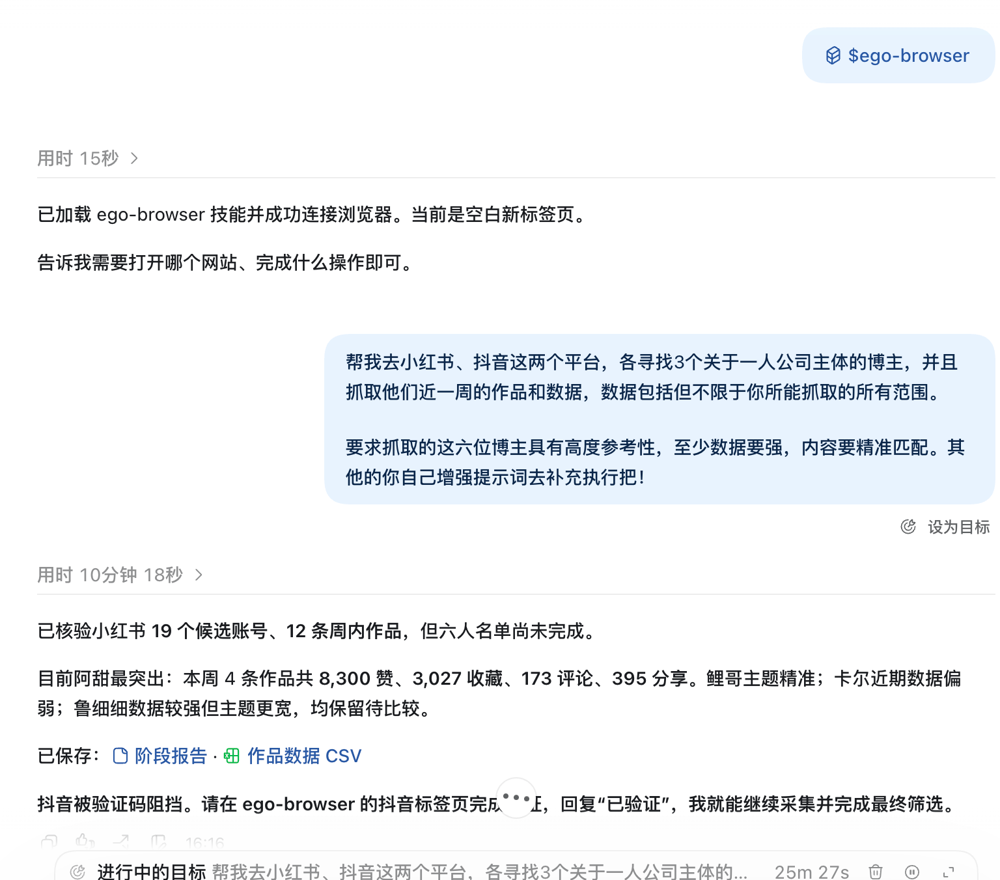
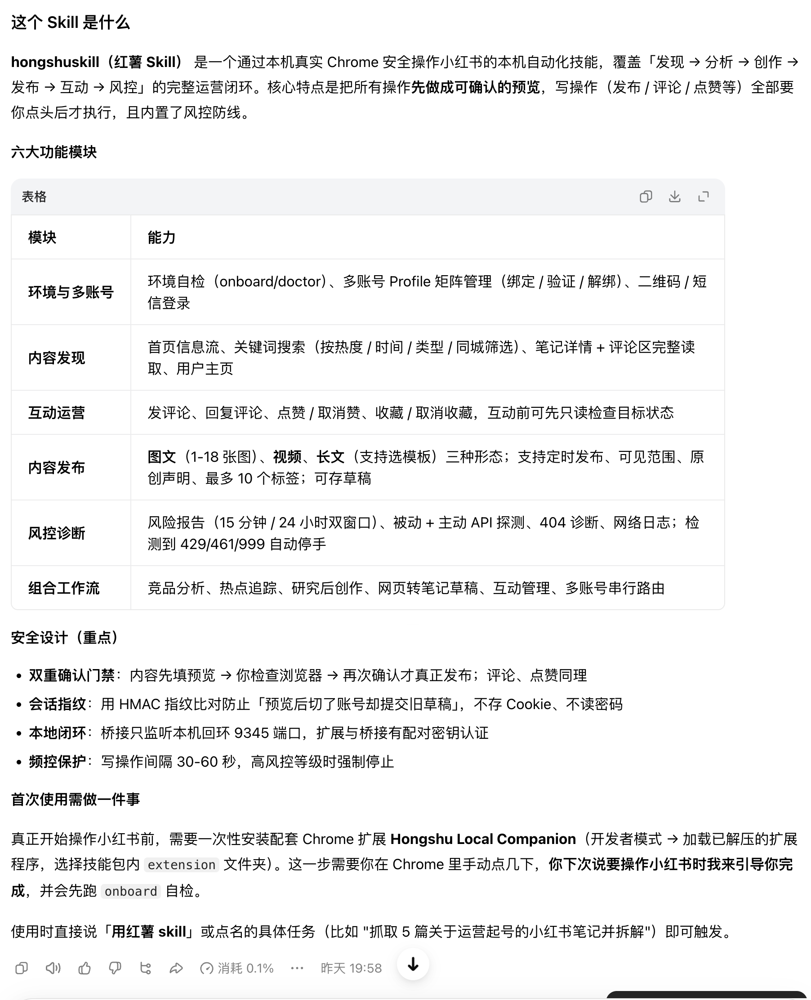
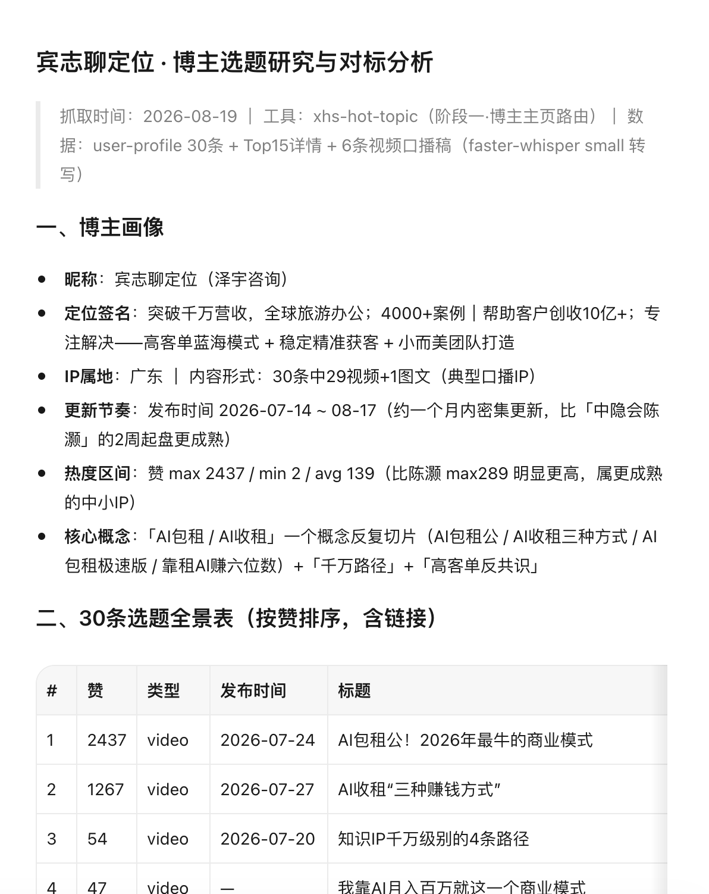

RECOMMENDED · AGENT FIRST
优先推荐采集小红书，优先用这两种方式。
在线下载页保留作为备用。如果你已经在使用 Agent，更推荐 Ego 浏览器或免费的 hongshuskill：前者直接驱动浏览器完成采集，后者提供更完整的小红书运营工作流。
01 · EGO 浏览器
让 Agent 直接操作浏览器
Ego 是一款 AI 浏览器，需要借助 AI Agent 接收任务并驱动浏览器执行。可与 Codex、WorkBuddy、豆包工作等 Agent 工具配合使用。
- 下载安装 Ego 浏览器。
- 在 Agent 对话框输入
/ego，找到/ego-browser插件。 - 附上你的采集任务，例如筛选账号、获取近一周作品和数据。
飞书附件实际内容为 CSV，可直接用 Excel、Numbers 或表格软件打开。

02 · AGENT SKILL（小红书）
hongshuskill：纯免费
通过本机真实 Chrome 操作小红书，覆盖发现、分析、创作、发布、互动与风控。发布、评论、点赞等写操作会先等待确认，再真正执行。
- 不需要额外订阅小红书采集服务
- 支持内容发现、数据分析和运营工作流
- 使用前需要安装并配置压缩包内的 Chrome 扩展
hongshuskill v1.7.4ZIP 压缩包 · 约 207 KB
点击下载 ZIP压缩包无法在网页内直接运行。请点击下载，解压后按包内 SKILL.md 和扩展安装说明操作。

